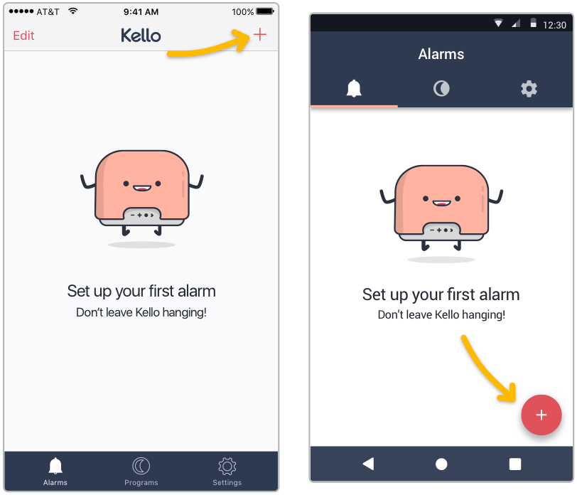
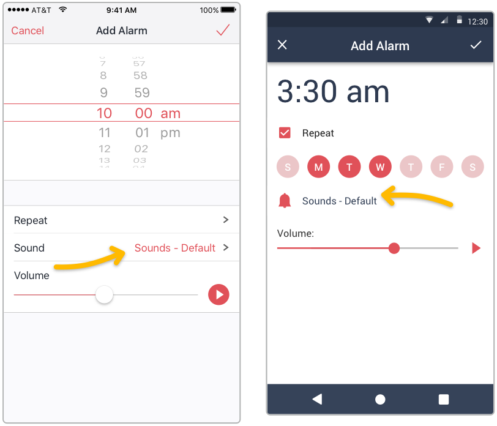
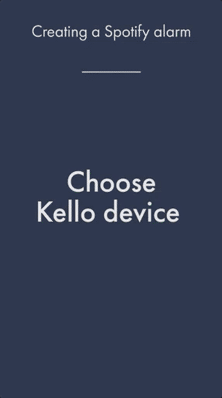
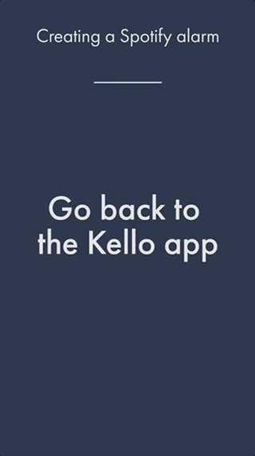
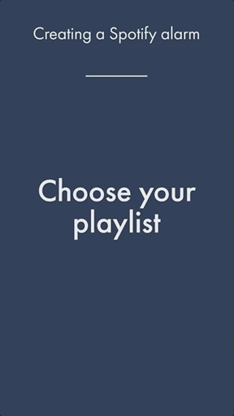

Creating an alarm using Spotify, Deezer, Tidal, SoundCloud or radio
Kello can wake you up with the following streaming services:
- Spotify
- Deezer
- Webradio
- Tidal
In order to create an alarm, Kello should be set up and connected to your home Wi-Fi network. Check out this article to set up your Kello for the first time.
Creating the alarm
- In the Kello app, go to the "Alarms" tab and click on the “+” button.

- Choose your recurrence and volume settings.
- Tap on “Sound”:

Using Spotify
- Press “Spotify” then “Launch Spotify”.
- In the Spotify app, go to the playlist, artist or radio you want to wake up with, then press the green button “Shuffle Play” (or “Play Radio”).
- Press “Devices Available” and choose Kello_XXXXXX.

- Go back in the Kello app and confirm your alarm.

- You can turn off your phone, Kello doesn't need it to wake you up with your music.

Using Deezer
- Press "Deezer" or "Tidal" and enter your credentials.
- Choose the playlist you want to use.
💡 You can use your Deezer Flow. - Validate the alarm.
💡 You can preview the playlist by pressing in the "Create Alarm" screen. - You can turn off your phone, Kello doesn't need it to wake you up with your music.
Using Tidal
- Press "Tidal" and enter your credentials.
- Choose the playlist you want to use.
⚠️ Important note: if you don't see your playlists in the list, you have to add them as favorite on Tidal. Simply go to your Tidal app and "like" the playlists you want to use. - Validate the alarm.
💡 You can preview the playlist by pressing in the "Create Alarm" screen. - You can turn off your phone, Kello doesn't need it to wake you up with your music.
Using Radio
- Press "Radio".
- Browse to the radio you want to use.
💡 You can search for a radio. - Validate the alarm.
💡 You can preview the playlist by pressing in the "Create Alarm" screen. - You can turn off your phone, Kello doesn't need it to wake you up with your radio.
💡 Some tips
- A dot appears on Kello's screen if an alarm is supposed to ring in less than 24 hours.
- You can preview, change your next alarm and turn them off and on directly on Kello, see this article.
- You can create up to 8 alarms.